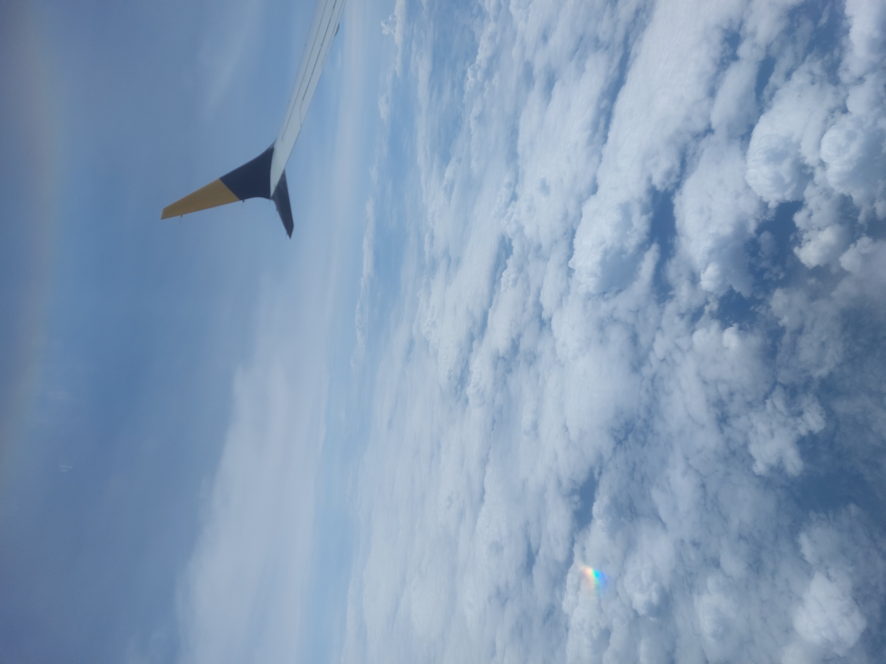
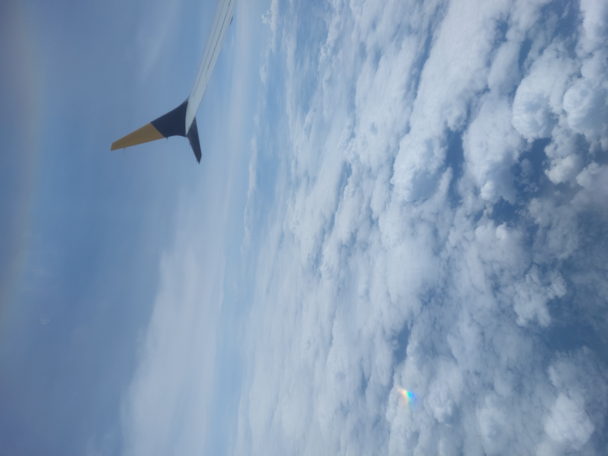
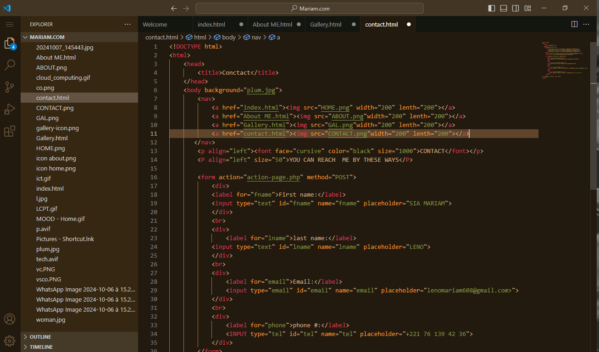
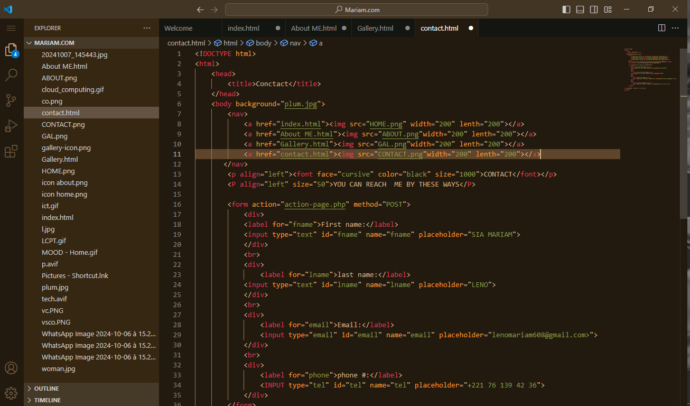

AboutMe
Hi, my name is SIA MARIAM LENO, i'm a student at Jewels International School Of Kinshasa.But you can call me sia or mariam.
I'm originally from guinea conakry but i have being living in senegal for 4 years now and then now i'm currently living in congo.
My favorite leasure is to read books about personal growth, science fiction, horror,webtoons etc, watching animes and movies too. As for sports i do soccer and basketball.
I do also sometimes partcipate and volunteer for a humaterian aid called MSF, the project is Called "Ensemble luttons contre la pollution" it's a project that focus on teaching children on how to recycle objects, transform trash into usable things like paintings etc..
Designing websites and creating networks for companies is part of my hobby.I have started my career in 2019 after i discovered my passion for designing just after that i started travelling.
In my year of grade 9 i did an intership in a senegalese transport company for 2 weeks, where i learned a lot about communication, technical skills, and learn about how to start a business.This journey allowed me to improve my comunication skills, acquire knowledge and many other things.
My goal in the futur is to see myself in 2 or 3 years in your college being the top 1 in my department, being the first in competitions and graduate with mentions.By observing through time my progress i believe in personal growth and by pushing yourself you can make your dream real.
One of my other goals is to in the futur create my own business company that welcome all potential designer that believe in themselves and have their own goal and stick to their principles.

 

 
